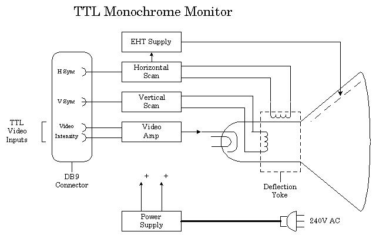

Most modern DOS computers continue the tradition of requiring a Video Interface Card to be plugged into a Bus Slot on the System Board but some do have the Video Interface circuitry built into the System Board. This is not good practice as it means the Video System can't be upgraded to a more advanced standard if required. Over the years, since the introduction of the PC computer in 1981, other Video Interface standards have been introduced to increase the Resolution and the Number of colours that could be displayed on the screen.
Definition - The resolution of a Video System is measured by counting the number of Pixels (picture elements or dots) in an X direction (across the screen) and in a Y direction (down the screen) and expressing these figures as X by Y.
The next Video Standard was EGA and this was followed by VGA. VGA has evolved through many variations of Super VGA to a point now where a confusing array of combinations of Resolution and number of colours exists.
The Video RAM holds the data that is used to generate the display on the Video Display Screen. The Video Interface circuit scans the Video RAM regularly and generates the image on the screen. This scanning process must go on and on as the Phosphor on the Video Display Screen only has a short persistence, and the image will fade away.
The actual data stored in the Video RAM depends on the Video Mode in use. A video image can be generated on the screen in two ways.
The Video RAM is located on the Video Interface Card. The DATA for the Video RAM is provided by the Operating System and/or the Application Software and is written into the Video RAM either by using Interrupt Services provided by the operating system (INT 10 for example), or directly by the application. It is bad practice for applications to bypass the service routines and to write directly to the Video RAM, but it is often done to make operation of the Video System faster.
What is stored in the Video RAM In Character Mode
In this mode, each character position on the screen requires two bytes of data in the Video RAM. One byte for the ASCII code for the character, and one byte for the Attribute data that determines the characters colour. The dot structure for each character, in the Character Set, is stored in a CHARACTER ROM. The ASCII Data in the Video RAM is used to Address the Character ROM to provide the dot structure data for each character.
The lower resolution mode was provided so the CGA card could be used with an American domestic colour Television set. The first CGA cards had an NTSC video output connector for this purpose. No attempt was made to provide a PAL video output suitable for Australian TV sets as the Horizontal and Vertical Scan Frequencies of the American system are quite different to those required by our television system.
The CGA characters are made up from an eight by eight matrix. The Character ROM has eight bytes of dot structure data for each character in the character set. Each byte consists of eight bits and each bit in turn determines if a dot is turned on or turned off.
In Graphics Mode the raw Dot Structure Data (the bit map) for every part of the Video Display Screen must be stored in the Video RAM. No Character ROM is used in this mode, every bit of pixel data must be written into the Video RAM. Graphics Modes require far more Video RAM than do Character Modes.
The CGA Video Interface provides a maximum graphics resolution of 640 dots by 200 dots. At maximum resolution in Character Mode there are 80 characters across the screen, and 25 rows of characters down the screen. As each character is made form an 8 by 8 matrix, this is equivalent to a resolution of 640 by 200.

The Saw Tooth Drive Wave forms produced by the deflection circuits deflect the electron beams across and down the screen providing a scan Raster. The CRT has a Deflection Yoke assembly around it's neck and this provides magnetic deflection of the electron beam.
The electron beam is switched ON and OFF to provide dots of light ( Pixel's ) on the screen. The Horizontal Scan Rate is a high frequency ( 15,750 Hz to about 68 KHz ) and the Vertical Scan Rate is a low frequency ( 50 Hz to 90 Hz ). The scan rates for each type of Video Standard are different and the scan rates that a particular monitor can operate over is limited.
Most Video Display Monitors can only be used with one type of Video Interface. The most popular Video Standard available at present is Super VGA, but many variations for Super VGA are available. Only the most expensive Super VGA monitors can operate over the full range of scan frequencies used by the various resolutions of VGA.
How is colour produced ? A colour display tube has three electron guns. These Electron Guns illuminate Red, Green and Blue phosphors on the face of the Cathode Ray Tube. A colour Video Display Monitor will have at least three Video Input signals and three Video Amplifier Circuits. The video signals control the electron beams,turning then on and off and controlling the brightness of the individual colour phosphors. If all three colours are at maximum brightness the resulting colour is white. Each dot of light on the screen is made up of three different colour dots.
An RGB Colour Monitor, used with a CGA Video Interface, will be similar to the Mono Monitor described above but will have three Video Amplifiers, one each for the Red Green and Blue electron guns. This monitor also uses a DB9S connector and the pin-out is as follows.
The CGA Frequencies and the timing of the Signals
The domestic Television system obtains double the line resolution by using a technique called interlacing. It takes two vertical scans to build up one image, the second scan draws lines between the scan lines produced by the first scan.
The eight bits of the Attribute Byte are organised in a way that they control both the Foreground and Background colours. The least significant four bits are used for the Foreground Colours, giving a maximum of 16 Foreground Colours. The next three bits are used for the Background Colours, giving a maximum of Eight Background Colours. The most significant bit (bit 7) causes the character to blink.
A Zero bit in an attribute byte position means the attribute that bit controls is off and a One means it is on. The Attribute value for a White character is 07 hex, this converts to 00000111 2. This means the Red Green and Blue Electron Guns are on, and combining Red, Green and Blue gives White. An attribute of 8F hex will produce a bright white character. ( 8F hex = 10001111 2 )
Remember, CGA uses four Video Signals, one each for Red, Green and Blue and and Intensity. This means CGA can produce a maximum of 16 colours. Due to limitations imposed by the size of the available Video RAM, 16 colours is only available in Character Modes, not in Graphics Modes.
The Attribute Byte
|
Foreground colours
|
Background colours
|
How about EGA and VGA in Character Mode.
When an EGA or VGA card is working in Character modes it is working in a similar way to the old CGA Video Interface, the only real difference is the number of dots used to make up each character and this depends on the Video System in use. The matrix size can be 8 by 14, 8 by 16, 9 by 14 or 8 by 16. When a DOS computer is booted it usually starts off in Video Mode Two (40 column by 25 rows of text) and then goes to Mode Three (80 column by 25 rows of text) by the time the DOS prompt is displayed.
Character Modes are quite efficient in that each character position on the screen only requires two bytes of data in the Video RAM to represent a character on the screen. They are also inflexible because they are limited to only displaying the characters available in the Character Set built into the Character ROM on the Video Interface.
Graphics Modes
In Graphics Modes, the Video RAM holds the Dot Structure Data for the display, and the number of bits required to represent each pixel depends on the maximum number of colours provided by the Video Mode in use. Two colours only require one bit per pixel, sixteen colours require four bits per pixel but 16.7 million would require 24 bits per pixel (three bytes per pixel).
The CGA Video System had only 16 Kbytes of Video RAM and so at it's highest resolution, 640 by 200, the CGA Video System could only display graphics in two colours, one bit per pixel. A 640 by 200 resolution display requires 128,000 pixels. Divide 128,000 by eight to get back to bytes and we see we need 16K Bytes of Video RAM. At a resolution of 320 by 200, CGA provided four colours.
| In it's simplest form VGA has two Graphics Modes, 640 by 480 pixels in 16 colours and 320 by 200 pixels by 256 colours. The official VESA standard for Super VGA were set many years ago when most VGA Video Interfaces had only 256 K or 512 Kbytes of Video RAM, and is 800 by 600 pixels in 16 colours. Today Super VGA Video Systems are run in at least 256 colours, and more often in 64,000 or 16.7 million colour modes.
These figures are arrived at by multiplying the total number of pixels by the number of bytes required to produce that number of colours. 640 times 480 equals 326,400 pixels times 0.5 (4 bits needed for 16 colours and 4 bits is half a byte) equals 153,600 bytes of Video RAM required. |
Amount of Video RAM required for some resolution and colour combinations.
|
When more than 128 Kbytes of Video RAM is required by the Video System, the RAM must be switched in and out of the 128 Kbyte of memory addresses allocated to the Video RAM.
Up to this point the characters have not been displayed on the screen. There is no direct link between the Keyboard Service Routine and the Video System.
The Operating System or Application, then reads the two byte codes from the Keyboard Buffer Area in memory, and processes them. The Operating System or Application then sends data to the Video System, usually via the Video Service Routine, to display the character if required.
There is no need to display the characters as they are typed but it does provide the user with important feedback. The Operating System or Application can, and often does, write directly to the Video RAM but this is not good practice.
In graphics mode the process is much more complicated, the Video Service Routine must generate a pixel image of the character, including its colour information, and write this to the Video RAM.
| PC Video Monitors | PC Video standards | Back to the opening index | Book three index |